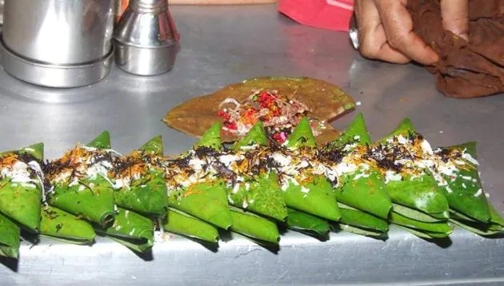

Banarasi Paan
Khaike paan banaras wala, khul jaye band akal ka taala”- is one of the most played songs at the paanshops in the bylanes of Banaras. If you have been thinking until now that the celebrated Banarasi paan gained fame because of this iconic Bollywood song, there are historical anecdotes with reference to the existence of paan decades ago. A well-known reference is from the Mughal history scriptures wherein the queens have been said to relish the delectable taste of paan. Paan was popular not just for its taste but also its texture, colour and appearance. What Really Is Banarasi Paan? Paan in Banaras is a symbol of love, happiness and hospitality. Since time immemorial, the people of Banaras have been serving paan as a gesture of greeting. There are a lot of factors which make Banarasi paan stand out of the mainstream; one of them is that the panwaaris of Banaras prepare fresh paan right on the spot unlike other paan wallas of the country. It's quite a delight to see them preparing a perfect paan right in front of your eyes. Secondly, the generous amount of love they put in while making the paan, makes it explicable. Banarasi paan is in itself a lot more than a refreshing savoury, it is, in fact, a food with a wonderful experience. Banarasi paan is an exotic combination of areca nuts, catechu (kattha) of fresh betel leaf, tobacco, slaked lime, to which other ingredients like rose petals (gulkand), silver foil (varakh) etc. are added. You can easily spot a paan shop in the famous streets of Banaras. You'll be amused on seeing a paan wala serving you the freshly prepared paan in his own unique style. After all, ‘Banarasi paan served in Banarasi style' is what truly represents the authenticity of the famous paan.
